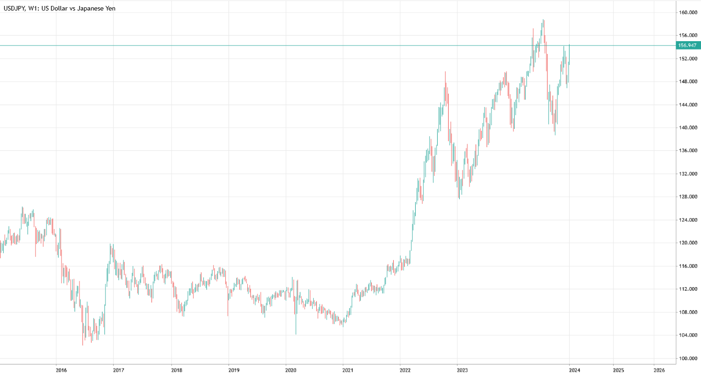

汇率下跌之后：日元贬值的宏观经济启示
现象

2022年的日元走势可谓一部“贬值狂想曲”
2021～2022年日元独自贬值
本书的目的
日元、日本经济正在（或将要）发生什么样的变化
作者：【日本】唐镰大辅
作者的身份：笔者的工作就是分析以外汇市场为中心的经济、金融形势
笔者认为，中长期行情的趋势，不仅对机构投资者至关重要，还和个人的资产管理息息相关。正如正文中将要论述的，无论是好是坏，2012年以后，日元和日本经济所处的环境，已经和之前的时代相比有了深刻的变化。
为什么日元是避险货币？
日本政府的债务情况可谓世界最差， 日本社会的少子老龄化进程是世界最快的，而日本经济的潜在增长率也是G7国家中最低的。
G7国家
G7（七国集团）是一个由全球七个主要工业化国家组成的国际经济组织。G7的成员国包括：
- 美国（United States）
- 加拿大（Canada）
- 日本（Japan）
- 德国（Germany）
- 法国（France）
- 意大利（Italy）
- 英国（United Kingdom）
G7的背景和作用：
- 成立背景：G7最早起源于20世纪70年代，尤其是在1975年，由于全球经济的困境和石油危机，七个工业化国家开始定期召开会议，讨论经济政策和国际问题。最初的成员包括美国、英国、法国、德国、意大利、日本，后来加拿大加入，成为七国集团的一员。
- 主要职能：G7的主要目标是协调成员国之间的经济政策，推动全球经济稳定与发展。它虽然没有正式的法律框架或常设机构，但它通过定期的峰会（每年一次）讨论全球经济、国际安全、环境保护、气候变化等重大议题。成员国之间的领导人会就全球政策进行协商，以加强国际合作。
- 影响力：G7成员国的经济规模巨大，它们的GDP总和占全球经济的很大一部分，因此G7在全球经济中的影响力非常大。尽管G7代表的只是世界上较小的一部分国家，但其政策和决策对全球经济形势、国际贸易、气候变化和其他全球性问题具有深远的影响。
G7与其他国际组织的关系：
- G20：G7的成员国与其他主要经济体一同组成了G20（二十国集团），G20是一个更加包容的全球经济合作平台，涵盖了世界主要的发达国家和发展中国家。
- 联合国：虽然G7不是联合国的一个正式机构，但它的决策常常与联合国的全球议程密切相关，特别是在全球经济、气候变化和发展援助等方面。
G7的主要议题：
- 经济政策：讨论如何促进全球经济增长、解决贸易不平衡、加强国际金融体系等。
- 全球安全与国际关系：讨论全球热点问题，如冲突解决、恐怖主义、核扩散等。
- 环境和气候变化：G7在应对气候变化、推动可持续发展方面发挥了重要作用，支持国际气候协议（如《巴黎气候协定》）。
- 发展援助：G7致力于支持全球贫困地区的发展，提供资金和技术支持。
总之，G7是一个由七个世界主要经济体组成的国际合作机制，虽然成员国相对较少，但其在全球经济、政治和安全事务中具有重要影响力。
历史事件对日元汇率的影响
2011年3月11日福岛第一核电站发生事故，受此影响，日元对美元升值到了1美元兑换80日元的水平。福岛核电站的事故可以称为日本“百年一遇的国难”，当时甚至有流言说首都东京也会因这次核事故而毁灭，此时日元竟然被投资者买入。在笔者印象中，大众对于日元避险货
币的定位最为不解的也就是彼时了。
随后的2016年，导弹落向日本海，投资者却仍然买入日元。在这两次国际危机中，日本都是当事国，可投资者仍然买入日元以避险。
随着日本的少子老龄化进程加深，日本本国市场的规模不断缩小，日本企业自然要把目光转向日本之外。